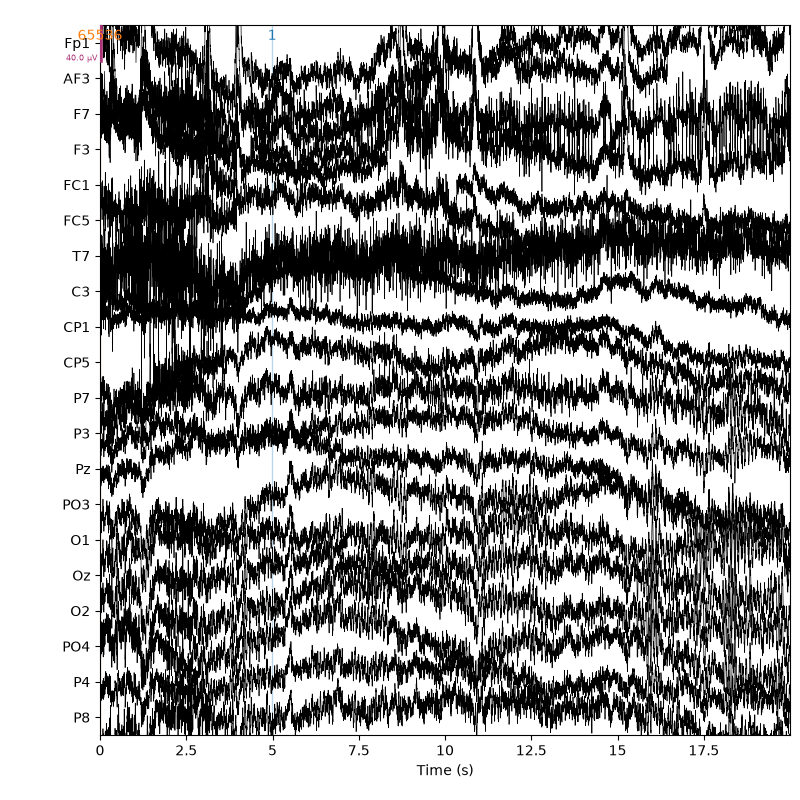

Note
Go to the end to download the full example code.
Read BIDS datasets#
When working with electrophysiological data in the BIDS format, an important resource is the OpenNeuro database. OpenNeuro works great with MNE-BIDS because every dataset must pass a validator that tests to ensure its format meets BIDS specifications before the dataset can be uploaded, so you know the data will work with a script like in this example without modification.
We have various data types that can be loaded via the read_raw_bids()
function:
MEG
EEG (scalp electrodes)
iEEG (ECoG and SEEG)
the anatomical MRI scan of a study participant
In this tutorial, we show how read_raw_bids() can be used to load and
inspect BIDS-formatted data.
# Authors: The MNE-BIDS developers
# SPDX-License-Identifier: BSD-3-Clause
Imports#
We are importing everything we need for this example:
import openneuro
from mne.datasets import sample
from mne_bids import (
BIDSPath,
find_matching_paths,
get_entity_vals,
make_report,
print_dir_tree,
read_raw_bids,
)
Download a BIDS dataset from OpenNeuro#
A downloaded OpenNeuro dataset is stored in a target_dir directory, which is
called the root of each BIDS dataset. This example uses this
EEG dataset of resting-state recordings
of patients with Parkinson’s disease.
Note
If the keyword argument include is omitted, the entire dataset will be
downloaded. We’re just using data from one subject to reduce the time it takes to
run the example.
dataset = "ds002778"
subject = "pd6"
# Create a BIDS root directory in the MNE dataset folder
bids_root = sample.data_path(download=False).parent / dataset
bids_root.mkdir(parents=True, exist_ok=True)
openneuro.download(dataset=dataset, target_dir=bids_root, include=[f"sub-{subject}"])
Using default location ~/mne_data for sample...
Attempting to create new mne-python configuration file:
/home/circleci/.mne/mne-python.json
Could not read the /home/circleci/.mne/mne-python.json json file during the writing. Assuming it is empty. Got: Expecting value: line 1 column 1 (char 0)
👋 Hello! This is openneuro-py 2026.4.1. Great to see you! 🤗
👉 Please report problems 🤯 and bugs 🪲 at
https://github.com/openneuro-py/openneuro-py/issues
🌍 Preparing to download ds002778 …
📥 Retrieving up to 19 files (5 concurrent downloads).
Overall: 0%| | 0.00/28.9M [00:00<?, ?B/s]
sub-pd6_ses-on_task-rest_eeg.bdf: 0%| | 0.00/17.4M [00:00<?, ?B/s]
Overall: 0%| | 16.0k/28.9M [00:00<07:01, 71.8kB/s]
sub-pd6_ses-on_task-rest_channels.tsv: 0%| | 0.00/2.22k [00:00<?, ?B/s]
CHANGES: 0%| | 0.00/379 [00:00<?, ?B/s]
sub-pd6_ses-on_scans.tsv: 0%| | 0.00/74.0 [00:00<?, ?B/s]
sub-pd6_ses-off_task-rest_eeg.bdf: 0%| | 0.00/11.5M [00:00<?, ?B/s]
sub-pd6_ses-on_task-rest_eeg.bdf: 17%|█▋ | 2.95M/17.4M [00:00<00:00, 30.9MB/s]
Overall: 13%|█▎ | 3.84M/28.9M [00:00<00:01, 15.5MB/s]
participants.json: 0%| | 0.00/1.24k [00:00<?, ?B/s]
sub-pd6_ses-off_task-rest_eeg.json: 0%| | 0.00/471 [00:00<?, ?B/s]
sub-pd6_ses-on_task-rest_beh.tsv: 0%| | 0.00/10.0 [00:00<?, ?B/s]
sub-pd6_ses-off_task-rest_eeg.bdf: 17%|█▋ | 1.91M/11.5M [00:00<00:00, 20.0MB/s]
sub-pd6_ses-on_task-rest_beh.json: 0%| | 0.00/433 [00:00<?, ?B/s]
Overall: 26%|██▋ | 7.61M/28.9M [00:00<00:00, 24.0MB/s]
sub-pd6_ses-off_task-rest_channels.tsv: 0%| | 0.00/2.22k [00:00<?, ?B/s]
sub-pd6_ses-off_task-rest_events.tsv: 0%| | 0.00/66.0 [00:00<?, ?B/s]
sub-pd6_ses-on_task-rest_eeg.bdf: 34%|███▍ | 5.91M/17.4M [00:00<00:00, 23.4MB/s]
sub-pd6_ses-off_task-rest_eeg.bdf: 34%|███▎ | 3.85M/11.5M [00:00<00:00, 20.2MB/s]
sub-pd6_ses-on_task-rest_eeg.json: 0%| | 0.00/471 [00:00<?, ?B/s]
sub-pd6_ses-on_task-rest_events.tsv: 0%| | 0.00/51.0 [00:00<?, ?B/s]
Overall: 42%|████▏ | 12.0M/28.9M [00:00<00:00, 31.5MB/s]
sub-pd6_ses-off_task-rest_beh.json: 0%| | 0.00/433 [00:00<?, ?B/s]
sub-pd6_ses-off_task-rest_eeg.bdf: 62%|██████▏ | 7.17M/11.5M [00:00<00:00, 26.8MB/s]
sub-pd6_ses-off_scans.tsv: 0%| | 0.00/75.0 [00:00<?, ?B/s]
sub-pd6_ses-on_task-rest_eeg.bdf: 48%|████▊ | 8.25M/17.4M [00:00<00:00, 21.6MB/s]
participants.tsv: 0%| | 0.00/1.62k [00:00<?, ?B/s]
Overall: 59%|█████▉ | 17.0M/28.9M [00:00<00:00, 38.3MB/s]
README: 0%| | 0.00/4.55k [00:00<?, ?B/s]
sub-pd6_ses-off_task-rest_eeg.bdf: 91%|█████████ | 10.5M/11.5M [00:00<00:00, 29.8MB/s]
sub-pd6_ses-on_task-rest_eeg.bdf: 60%|█████▉ | 10.4M/17.4M [00:00<00:00, 21.2MB/s]
Overall: 77%|███████▋ | 22.3M/28.9M [00:00<00:00, 43.7MB/s]
sub-pd6_ses-on_task-rest_eeg.bdf: 86%|████████▌ | 14.9M/17.4M [00:00<00:00, 29.4MB/s]
Overall: 93%|█████████▎| 26.8M/28.9M [00:00<00:00, 44.8MB/s]
sub-pd6_ses-off_task-rest_beh.tsv: 0%| | 0.00/10.0 [00:00<?, ?B/s]
Overall: 100%|█████████▉| 28.9M/28.9M [00:01<00:00, 28.5MB/s]
dataset_description.json: 0%| | 0.00/354 [00:00<?, ?B/s]
Overall: 100%|██████████| 28.9M/28.9M [00:01<00:00, 28.2MB/s]
✅ Finished downloading ds002778.
🧠 Please enjoy your brains.
Explore the dataset contents#
We can use MNE-BIDS to print a tree of all
included files and folders. We pass the max_depth parameter to
mne_bids.print_dir_tree() to the output to four levels of folders, for
better readability in this example.
print_dir_tree(bids_root, max_depth=4)
|ds002778/
|--- CHANGES
|--- README
|--- dataset_description.json
|--- participants.json
|--- participants.tsv
|--- sub-pd6/
|------ ses-off/
|--------- sub-pd6_ses-off_scans.tsv
|--------- beh/
|------------ sub-pd6_ses-off_task-rest_beh.json
|------------ sub-pd6_ses-off_task-rest_beh.tsv
|--------- eeg/
|------------ sub-pd6_ses-off_task-rest_channels.tsv
|------------ sub-pd6_ses-off_task-rest_eeg.bdf
|------------ sub-pd6_ses-off_task-rest_eeg.json
|------------ sub-pd6_ses-off_task-rest_events.tsv
|------ ses-on/
|--------- sub-pd6_ses-on_scans.tsv
|--------- beh/
|------------ sub-pd6_ses-on_task-rest_beh.json
|------------ sub-pd6_ses-on_task-rest_beh.tsv
|--------- eeg/
|------------ sub-pd6_ses-on_task-rest_channels.tsv
|------------ sub-pd6_ses-on_task-rest_eeg.bdf
|------------ sub-pd6_ses-on_task-rest_eeg.json
|------------ sub-pd6_ses-on_task-rest_events.tsv
We can even ask MNE-BIDS to produce a human-readbale summary report on the dataset contents.
print(make_report(bids_root))
Summarizing participants.tsv /home/circleci/mne_data/ds002778/participants.tsv...
Summarizing scans.tsv files [PosixPath('/home/circleci/mne_data/ds002778/sub-pd6/ses-off/sub-pd6_ses-off_scans.tsv'), PosixPath('/home/circleci/mne_data/ds002778/sub-pd6/ses-on/sub-pd6_ses-on_scans.tsv')]...
The participant template found: comprised of 14 male and 17 female participants;
comprised of 31 right hand, 0 left hand and 0 ambidextrous;
ages ranged from 47.0 to 82.0 (mean = 63.39, std = 8.69)
The UC San Diego Resting State EEG Data from Patients with Parkinson's Disease
dataset was created by Alexander P. Rockhill, Nicko Jackson, Jobi George, Adam
Aron, and Nicole C. Swann and conforms to BIDS version 1.2.2. This report was
generated with MNE-BIDS (https://doi.org/10.21105/joss.01896). The dataset
consists of 1 participants (comprised of 14 male and 17 female participants;
comprised of 31 right hand, 0 left hand and 0 ambidextrous; ages ranged from
47.0 to 82.0 (mean = 63.39, std = 8.69)) and 2 recording sessions: off, and on.
Data was recorded using an EEG system (Biosemi) sampled at 512.0 Hz with line
noise at 60, and 50 Hz. There were 2 scans in total. Recording durations ranged
from 191.0 to 289.0 seconds (mean = 240.0, std = 49.0), for a total of 480.0
seconds of data recorded over all scans. For each dataset, there were on average
41.0 (std = 0.0) recording channels per scan, out of which 41.0 (std = 0.0) were
used in analysis (0.0 +/- 0.0 were removed from analysis).
Now it’s time to get ready for reading some of the data! First, we need to
create an mne_bids.BIDSPath, which is the workhorse object of
MNE-BIDS when it comes to file and folder operations.
For now, we’re interested only in the EEG data in the BIDS root directory of the Parkinson’s disease patient dataset. There were two sessions, one where the patients took their regular anti-Parkinsonian medications and one where they abstained for more than twelve hours. For now, we are not interested in the on-medication session.
sessions = get_entity_vals(bids_root, "session", ignore_sessions="on")
datatype = "eeg"
extensions = [".bdf", ".tsv"] # ignore .json files
bids_paths = find_matching_paths(
bids_root, datatypes=datatype, sessions=sessions, extensions=extensions
)
We can now retrieve a list of all EEG-related files in the dataset:
print(bids_paths)
[BIDSPath(
root: /home/circleci/mne_data/ds002778
datatype: eeg
basename: sub-pd6_ses-off_task-rest_channels.tsv), BIDSPath(
root: /home/circleci/mne_data/ds002778
datatype: eeg
basename: sub-pd6_ses-off_task-rest_eeg.bdf), BIDSPath(
root: /home/circleci/mne_data/ds002778
datatype: eeg
basename: sub-pd6_ses-off_task-rest_events.tsv)]
Note that this is the same as running:
[BIDSPath(
root: /home/circleci/mne_data/ds002778
datatype: eeg
basename: sub-pd6_ses-off_task-rest_channels.tsv), BIDSPath(
root: /home/circleci/mne_data/ds002778
datatype: eeg
basename: sub-pd6_ses-off_task-rest_eeg.bdf), BIDSPath(
root: /home/circleci/mne_data/ds002778
datatype: eeg
basename: sub-pd6_ses-off_task-rest_events.tsv)]
The returned list contains three paths:
sub-pd6_ses-off_task-rest_channels.tsv,
sub-pd6_ses-off_task-rest_events.tsv, and
sub-pd6_ses-off_task-rest_eeg.bdf.
The first two are so-called sidecar files that contain information on the
recording channels and experimental events, and the third one is the actual
data file.
Prepare reading the data#
There is only one subject (sub-pd6) and one experimental task (rest).
Let’s use this knowledge to create a new BIDSPath with
all the information required to actually read the EEG data. We also need to
pass a suffix, which is the last part of the filename just before the
extension – "channels" and "events" for the two TSV files in
our example, and "eeg" for EEG raw data. For MEG and EEG raw data, the
suffix is identical to the data type, so don’t get confused here!
Now let’s print the contents of bids_path:
print(bids_path)
/home/circleci/mne_data/ds002778/sub-pd6/ses-off/eeg/sub-pd6_ses-off_task-rest_eeg.bdf
You probably noticed two things: Firstly, this looks like an ordinary string now, not like the more-or-less neatly formatted output we saw before. And secondly, there’s suddenly a filename extension which we never specified anywhere!
The reason is that when you call print(bids_path), BIDSPath
returns a string representation of fpath, which looks
different. If, instead, you simply typed bids_path (or print(repr(bids_path)),
which is the same) into your Python console, you would get the nicely formatted
output:
BIDSPath(
root: /home/circleci/mne_data/ds002778
datatype: eeg
basename: sub-pd6_ses-off_task-rest_eeg)
The root here is – you guessed it – the directory we passed via the
root parameter, the “home” of our BIDS dataset. The datatype, again,
is self-explanatory. The basename, on the other hand, is created
automatically based on the suffix and BIDS entities we passed to
BIDSPath; in our case, subject, session and task.
Note
There are many more supported entities, the most-commonly used among them
probably being acquisition. Please see
our introduction to BIDSPath to learn more
about entities, basename, and BIDSPath in general.
But what about that filename extension, now? fpath, which
- as you hopefully remember – is invoked when you run print(bids_path) –
employs some heuristics to auto-detect some missing filename components.
Omitting the filename extension in your script can make your code
more portable. Note that, however, you can explicitly specify an
extension too, by passing e.g. extension=".bdf" to BIDSPath.
Read the data#
Let’s read the data! It’s just a single line of code:
raw = read_raw_bids(bids_path=bids_path, verbose=False)
/home/circleci/project/examples/read_bids_datasets.py:185: RuntimeWarning: Unable to map the following column(s) to MNE:
gender: f
MMSE: 30
NAART: 42
disease_duration: 8
rl_deficits: L OFF meds, more R ON meds
notes: Used preprocessed data from EEGLAB .mat file instead of raw data for pd on
raw = read_raw_bids(bids_path=bids_path, verbose=False)
Notice that a RuntimeWarning is issued here. This is because some BIDS fields
(gender, MMSE, NAART, disease_duration, rl_deficits, and
notes) could not be mapped to appropriate MNE metadata fields. You can safely
ignore this warning as it does not affect the data reading process at all.
Now we can inspect the raw object to check that it contains to correct metadata.
Basic subject metadata is here:
print(raw.info["subject_info"])
<subject_info | his_id: sub-pd6, birthday: 1949-02-17, hand: 1>
Power line frequency is here:
print(raw.info["line_freq"])
60.0
Sampling frequency is here:
print(raw.info["sfreq"])
512.0
Events are available as annotations:
print(raw.annotations)
<Annotations | 2 segments: 1 (1), 65536 (1)>
Finally, we can plot the resulting raw data:
raw.plot(duration=20, show_scrollbars=False)

Using matplotlib as 2D backend.
For automatic theme detection, "darkdetect" has to be installed! You can install it with `pip install darkdetect`
<MNEBrowseFigure size 800x800 with 4 Axes>
Total running time of the script: (0 minutes 2.122 seconds)